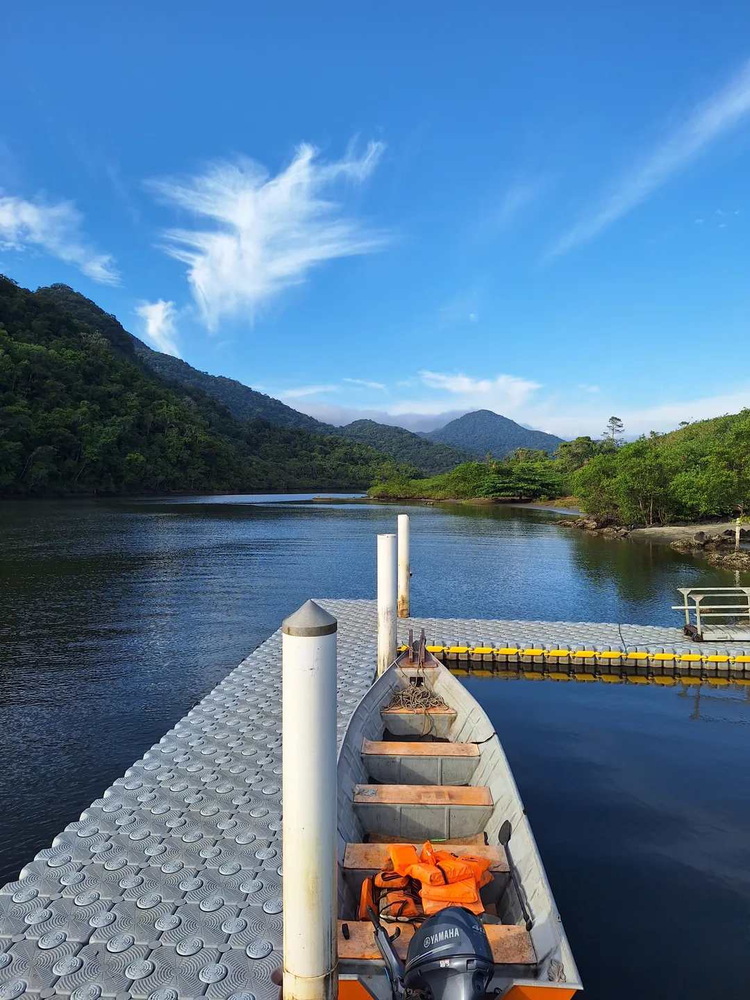

Embarque seguro

Parada 01 · Ponto de partida
Píer da Marina Toshio no Rio Guaraú
Saída direto da nossa rampa e píer na Rua Pedro Kijuro Yamauti, 210, com estrutura familiar à beira do rio desde 2001.